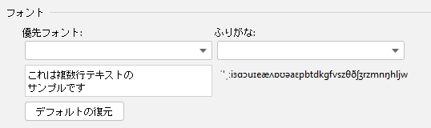

インストール後にIDE を再起動します。
テキストを選択するか、マウスをテキストに向けて、マウスの右ボタンをクリックして、翻訳します
または、ショートカットキーを使用して翻訳します。詳細については、「アクション」を参照してください。
ターゲット言語を翻訳して置き換えます。翻訳先言語が英語の場合、アストラ式の翻訳結果、単語区切り付きの翻訳結果（複数の単語を含む場合、単語の区切り符号はプラグインの設定画面で設定可能：翻訳設定 > 区切り記号）、そして元の翻訳結果をそれぞれ出力します。
使用法：テキストを選択するか、マウスがテキストを向けて > マウスの右ボタンをクリック > 翻訳と置換...（または、ショートカットキーを使用して翻訳します。詳細については、「 アクション」を参照してください）。
ステータスバーの翻訳エンジンステータスアイコンをクリックするか、ショートカットキーの Ctrl + Shift + S（Mac OS: Control + Meta + Y）を使用して、翻訳エンジン（Google 翻訳、有道翻訳、Baidu 翻訳）をすばやく切り替えることができます。 アクション
翻訳ダイアログを開きます。デフォルトでは、ツールバーに表示されます。デフォルトのショートカットキー：
単語を取得して翻訳します。すでにテキストが選択されている場合には、まず選択されたテキストから単語を取得します。選択されているテキストがない場合は、デフォルトでテキストの最大範囲から自動的に単語を取得します。（単語の取得モードはSettings で設定可能です）デフォルトはエディタの右クリックメニューに表示され、デフォルトのショートカットキーは次のとおりです。
単語を取得して翻訳します。テキストの最大範囲から自動的にすべての単語を取得します。手動で選択されたテキストを無視します。デフォルトのショートカットキー：（なし）
単語を取得して翻訳します。最も近い単語を自動的に取得します。手動で選択されたテキストを無視します。デフォルトのショートカットキー：（なし）
翻訳して置き換えます。単語を取得すると同時に翻訳を行います。デフォルトはエディタの右クリックメニューに表示されます。デフォルトのショートカットキー：
ドキュメントのコメントを翻訳します。デフォルトでエディタの右クリックメニューに表示され、カーソルがドキュメントのコメント部分にある場合に使用できます。デフォルトのショートカットキー：（なし）
クイックドキュメント中のテキスト表示を翻訳文と原文に切り替えます。クイックドキュメントのポップアップまたはドキュメントツールのウィンドウを選択している場合に使用できます。デフォルトのショートカットキー（翻訳と同じ）：
テキストコンポーネント（クイックドキュメント、メッセージバブル、入力フィールドなど）で選択されたテキストを翻訳します。単語の自動取得をサポートしません。デフォルトのショートカットキー：
翻訳エンジンを素早く切り替えます。デフォルトのショートカットキー：
リアルタイム翻訳ダイアログを表示します。デフォルトのショートカットキー：（なし）
[毎日の一語] ダイアログを表示します。デフォルトのショートカットキー：（なし）
翻訳ダイアログのショートカット：
翻訳バブルのショートカットキー：
クイックドキュメントウィンドウのショートカットキー：
回答：
回答：文字化けは通常、フォントに対応する文字がないことが原因です。プラグインの設定ページでフォントを変更して文字化けの問題を解決できます（次の図を参照）。
回答：パスワードの保存方法をIn KeePass 方式に変更してみてください。（外観と動作の設定 > システム設定 > パスワード）原因と詳細：
回答：ショートカットキーは他のプラグインまたは外部アプリケーションによって使用されている場合、動作しません。該当する操作のために新しいショートカットキーをリセットできます。
回答：プラグインに問題がある場合、またはプラグインに関するコメントや提案がある場合は、ここをクリックして、フィードバックできます。質問をフィードバックする前に、「問題管理のお知らせ」を参照してください。問題をフィードバックするときは、次に示すように収集されたエラーメッセージを忘れずに記載してください（エラーメッセージはクリップボードにコピーされます）。